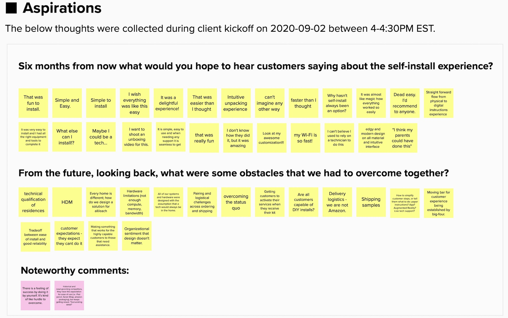
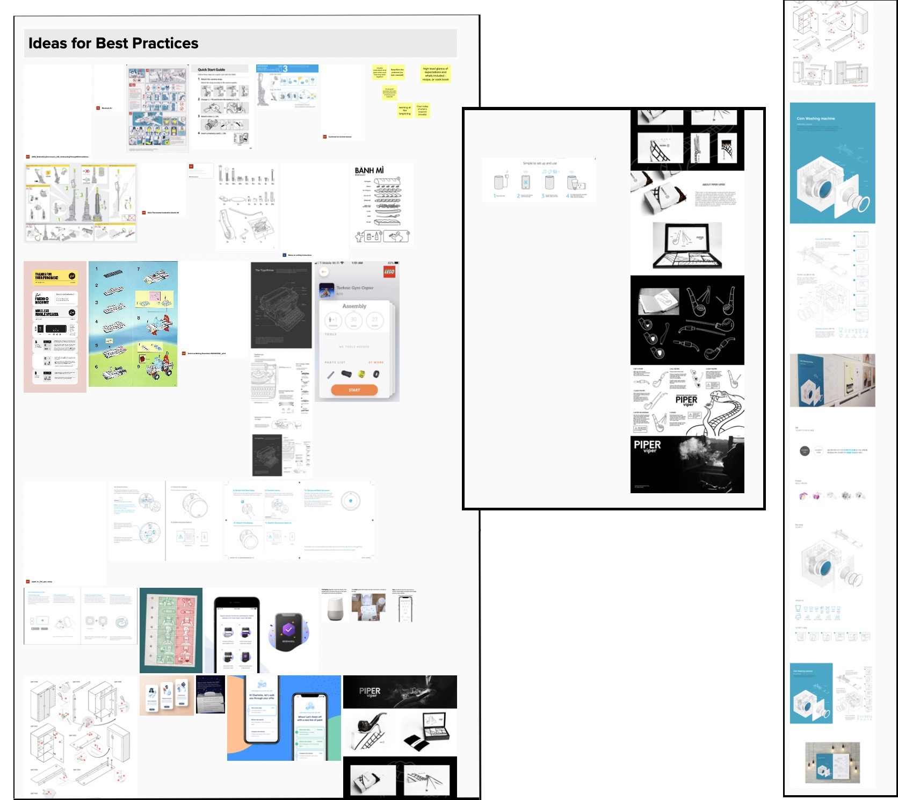
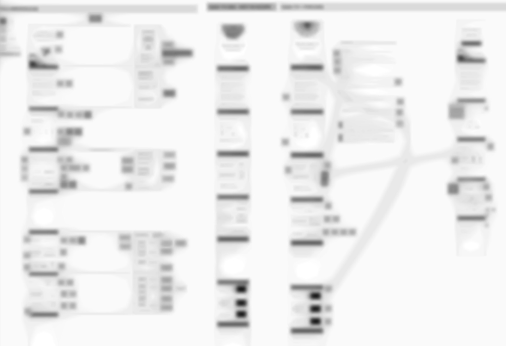

Service Designer
How do we reduce technician costs and improve installation times? By designing the net new DIY wi-fi and cable installation customer experiences. This very exciting fast-moving project shifted as discoveries were made.
Typically cable and home internet installations are carried out 100% by trained technicians who can assess the home, install hardware, and set up the software to get a customer set up. The cost involved per technician on any installation day costs hundreds of dollars. This cost has been hard to charge or pass on to customers, ultimately becoming a significant cost item to the client. With the introduction of COVID, the need for a socially distanced approach to installation and a faster way for customers to get set up was needed.
The goal when joined was a tiered experience where costs can be offset, installations can be quickly scaled, and customers would feel empowered to complete the installations themselves. This experience would revolve around a DIY experience, a do-it-with-me experience (DIY with assistance), and a do it for me experience (future). Ultimately, the service design solution was to develop the target state self-install journey based on insights drawn from interviews, competitor research, reviewing the current state journey and assets, and key pain points derived from aforementioned activities.
The specific role I was onboarded for was to co-own interaction design work products including the end-to-end journey and digital app prototype creation, co-own interviews and research, cross track collaboration, and quality of all interaction design deliverables.
Before my team was onboarded, primary activities and research led to the conclusion that service designers were needed. These activities and research included:
This took a week to go through.
The project was a total of six weeks. With only one week to go through all the preexisting work before diving into activities, absorbing and understanding the big picture and the details was a lot. What helped me was printing out resources, highlighters, stickies, taking notes, asking questions, discussing material with the service design lead, stretching and taking tea breaks, and a good paper shredder for the end of the project.
Going through the current assets and data, we created an existing state blueprint to gather an understanding of gaps in the experience and what could be improved upon.
 The blueprint helped us understand the prototype DIY process and how we could improve the experience.
The blueprint helped us understand the prototype DIY process and how we could improve the experience.
The service design team lead and I gathered knowledge and understood user issues by interviewing key people involved with the product, home installations, and customer service. We developed an interview script, requested consent to record from each interviewer, and recorded the interviews on Otter (a tool which records audio and transcribes recordings into text). Later, we re-interviewed some stakeholders as we gathered more information and developed more questions.
SMEs from different teams were interviewed to get a breadth of understanding.We also asked the stakeholders how they wished to feel after the project was complete during project kick-off. This was a great way to track whether or not we reached client expectations at the end of the project.
While interviewing, the pace is quite fast. At first, I tried to take notes while it was happening, but I quickly realized this wasn't the best course of action since it took longer to type than it was for the interviewee to speak. I tried to summarize, but it left details missing. I decided to rely on the otter recordings and focus on standout notes that may help me ask any additional questions before the interview was over.
We developed a best-in-class research document looking at the competition and related concepts (home installations). This highlighted the good and bad things we should consider for the experience we were designing. The lead service designer and I worked independently on the same Mural board where we placed our research and then regrouped to share our findings.
 Competitor experiences were laid out on a Mural board.
Competitor experiences were laid out on a Mural board.
During the research phase we highlighted:
This resulted in 18 stories:
Once the client confirmed this was the right path, we used the original blueprint and research synthesis to generate 5 guiding design principles. The 5 principles were to guide the work created in the solution phase of the design process and guide all deliverables.
 To get a breadth of understanding, SMEs from different teams were interviewed.
Utilizing Mural, we synthesized the stakeholder interviews and determined positive, negative, and feedback that needed to be followed up.
To get a breadth of understanding, SMEs from different teams were interviewed.
Utilizing Mural, we synthesized the stakeholder interviews and determined positive, negative, and feedback that needed to be followed up.
With over 14 interviews, many client documents, and past prototype research, I found it challenging to keep track of where pieces of information were from. This was necessary to back up assumptions and design decisions. To help manage this, I heavily relied on Mural and my notes. I added resources as links and screenshots into Mural and noted takeaways from each. In addition, I kept notes that marked the document/resource and the key idea or finding or idea I found significant to take away. The bigger challenge was synthesizing user interviews and not knowing where specific answers came from - I cross-referenced information with the Mural boards and Otter transcripts.
Figuring out what we could do in the interim since the ideal solution would take much longer to implement, defining a new instruction experience for DIY internet and cable setup kits were decided. We were to design the instruction experience, and the client would later complete the technical writing and graphic design. This would be launched in November, a month after I roll off the project.
At this point, we have already received sign-off for the target state end-to-end story definition and use case prioritization, completed and aligned on testing protocol. I was assigned to work on instruction design. At the same time, the team added a new resource and worked on the conceptual design of end-to-end journeys, the InVision prototype of key customer moments, and design the user testing on the designs.
Similar to the start of the project, I first sought out great instruction design examples. I did not limit the research to direct competitors but looked at different industries and sought out what made instructions more user-friendly. The good and not so easy to understand were both kept in mind.
 It always starts with research and analysis!I created a Mural board with screenshots of instructions. Ideas that could be taken away were marked by stickies). I also considered the current instruction sets, marking up parts that could be improved based on user testing feedback, top use cases, and things that could be more clear.
 The instruction sets used in user testing had a lot of room for improvement.I was on my own to develop these instructions and wasn't quite sure where to start. Of course, research and analysis is always the first thing I do, but beyond that, I wasn't confident about what was next. So, from experience, I decided that developing instruction principles and then creating draft templates with the research and principles in mind would be a good start. Also, getting feedback from the team when I felt a little bit of friction would be necessary, especially with the short amount of time left on the project.
I developed principles to guide instruction content from the project's guiding principles, the packaging team's principles, and the design research. Then, I translated the principles into a deck to present to the team and a PDF for the client and future work. These didn't seem too important to the service design team, but they proved to be very useful for developing the rest of my deliverables and for the client to use going forward. In retrospect, I would have saved the team time and just presented this later when showcasing my deliverables.
Principles that guided written instruction content.I was given two weeks to draft three instruction sets. During this, I went through the templates line by line with the client and then reworked the takeaways to a point where the templates would be ready to hand off to a technical writer and illustrator for November. Two weeks was a squeeze; in the future, if I ever had to estimate this kind of work, I'd give it at least three.
This is an example of the instruction templates.To wrap up my contributions to the project, I followed up on any unanswered questions and confirmed the target state journey process with the client. Finally, as I was leaving the project, I cleaned up the takeaways from this so they could be taken away by the lead service designer continuing in the project.
As part of the service design team, I assisted in delivering a target-state user journey with pain points and user flows (happy and unhappy paths). The team pivoted so that I could design the paper instructions as the rest of the team worked on other artifacts (future state service blueprint, use cases, and mobile app prototype). I owned and delivered a framework to guide the instruction experience and paper instruction templates for the customer installation kits to improve installation success rates.
The in-package instructions included:This work was ready for an illustrator and technical writer to come in and complete, and a month later, for roll out in the installation packages.
I always want to make sure the best solution possible is provided, but there are typically constraints that prevent simple things from being done. Because the scope did not allow me to work beyond the instruction sets, I decided I could at least give my feedback on things that can be actioned for a better experience (see "future" section).
My deliverables revolved around paper instructions since the in-app instruction design was descoped. Although my part in the project was completed, I had many thoughts I wanted the right people to consider. Because of this, I decided to create a document to send off to the client, "Takeaways and Considerations for Designing In-App Instructions." This document outlined items to help guide the content for in-app instructions and discussed items I strongly believed needed to be changed or added throughout the customer journey for a smoother and more consistent user experience. Changes mentioned include the website, app, paper instructions, terminology, and the processes involved.
This 3.5-page document included an annotated example of possible changes to the current work-in-progress installation app and suggested translating the paper instructions into the work-in-progress installation app for consistency and better user understanding. It also included ideas that may ease user understanding based on user-testing (i.e., changing terminology, making specific things clearer, and aligning content).
I learned so much by being on this project with an experienced team. Although it was 1.5 months, the overtime worked and the amount of experience gained is something I learned from as much as I provided.
Gathering information is a huge part of design, but the next stage is taking that information to do something. Synthesizing the research more formally (or as formal as a whiteboard can get), we used that information to analyze the current state and guide a new user journey. I learned that recording tools would be valuable in accurately gathering information, and tracking where the information came from would be a challenging but important task.
All opportunities are different in consulting, and the type of work is dependent on the work sold. Working as a service designer is one of those rare opportunities I was able to experience, and with it, the service blueprint. It was fascinating being exposed to not just the siloed digital experience but multiple parts throughout the employee and user experience.
Most of my professional work has been designed for the digital realm and specific pieces of work. Undertaking conceptual work to translate to other teams and part of the project was new to me in this project, and I didn't realize the value in it until then. Developing concepts and principles were like a north star in creating designs. I took the principles generated for the overall project, used them in creating paper instructions, and even developed additional guidelines for print material in general. Even though I point out print vs digital, both realms overlap and going forward, I would feel comfortable dealing with both on a project.
This project had a rigid timeline and caused my team to change direction to best use the time and requirements. The more experience I gather, the better I understand the amount of work involved. From this experience, I learned that even though specific work was promised, it is better to pivot if a better decision can be made with the available resources.